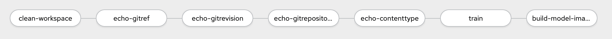
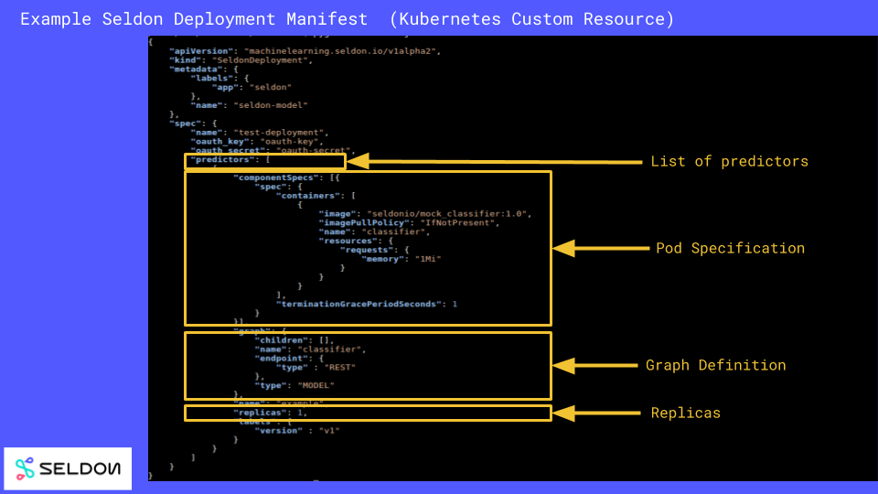
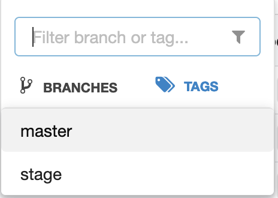
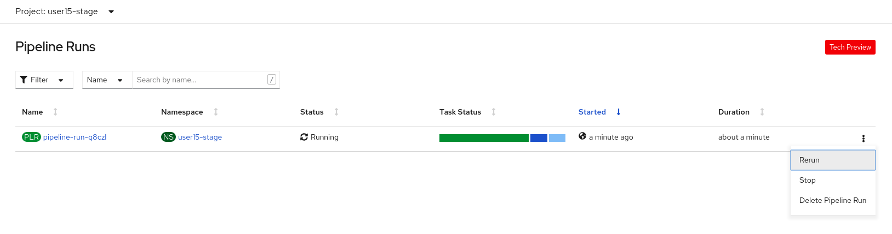
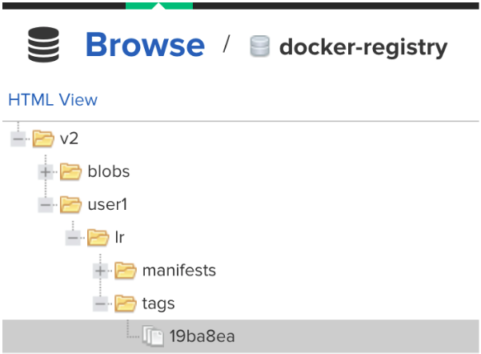
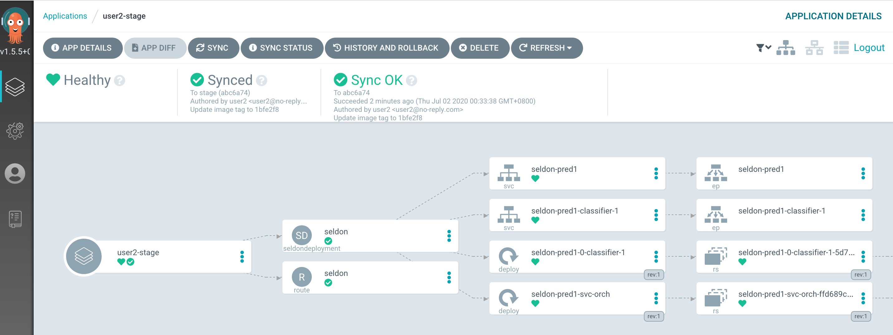
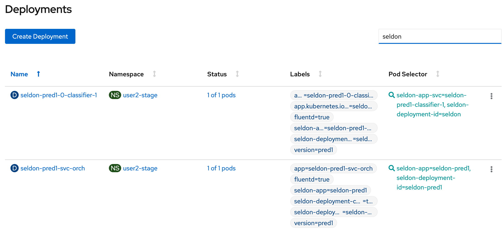

PYTHON_SCRIPT=lr.py
RUN_NAME=lr8 Deploy The Model To Staging
Deploy The Model To Staging
The model has been tested in the development environment and is now ready to be deployed to the staging environment.
Once we code is pushed to the git repository, the pipeline will run to build and train the image. We will also be using Argo CD as the GitOps tool to deploy the model to the staging environment.
To get started, access the
CodeReady Workspaces instance, and log in using the username and
password you have been assigned
(e.g. user1/r3dh4t1!):
OpenShift Pipelines
OpenShift Pipelines is a Kubernetes-style CI/CD solution based on Tekton. It builds on the Tekton building blocks and provides a CI/CD experience through tight integration with OpenShift and Red Hat developer tools.
A Tekton pipeline has been created for you.
|
Here, users are able to explore the different stages of the pipeline |

The pipeline consists of the following stages
-
Git clone the source code
-
Run
train-stage.shto train the model -
Build the image using S2I (Source-to-Image)
-
Push the image into Nexus registry
Argo CD
Argo CD is a declarative continuous delivery tool that leverages GitOps to maintain cluster resources. Argo CD is implemented as a controller that continuously monitors application definitions and configurations defined in a Git repository and compares the specified state of those configurations with their live state on the cluster. Configurations that deviate from their specified state in the Git repository are classified as OutOfSync. Argo CD reports these differences and allows administrators to automatically or manually resync configurations to the defined state.
Training script
train-stage.sh has been written to be used in the pipeline to call your python script and saves the model into the pipeline workspace. train-stage.sh can be found in your Gogs repository. The training script uses a config.sh that allows you to define the model to be trained.
Under /projects/rh-mlops-workshop/workshop/src/train/config.sh:
|
Note that the code directly below this statement is not meant to be run but serves as an illustration for the user to take note that the python script used is lr.py and the associated run name is lr. |
Building The Image
Once the model has been saved into the pipeline workspace, the building stage will begin to assemble the image by calling S2I and buildah.
Buildah is a tool that facilitates building Open Container Initiative (OCI) container images.

-
requirements.txt, for python dependencies -
.s2i/bin/assemble, to customize image assembling -
.s2i/environment, custom environment variables -
app.py, python script to launch the application
In our workshop, we have overridden the APP_SCRIPT environment variable to use app.sh to launch the model.
The source code is available here
Deployment
Once the image has been pushed to Nexus, we will deploy the model using Seldon’s operator by creating a SeldonDeployment resource.
Seldon Core, an open-source framework, makes it easier and faster to deploy your machine learning models and experiments at scale on Kubernetes. Seldon Core extends Kubernetes with its own custom resource SeldonDeployment where you can define your runtime inference graph made up of models and other components that Seldon will manage.
A SeldonDeployment is a JSON or YAML file that allows you to define your graph of component images and the resources each of those images will need to run (using a Kubernetes PodTemplateSpec). The parts of a SeldonDeployment are shown below:

Push To Staging Branch
Now let’s push the code to the staging branch so that the pipeline will run.
git checkout -b stage
git push -u -v origin stage

Because Gogs has been configured with a webhook, a git push will trigger our pipeline.
|
Do not change the webhook. |
You can go to OpenShift Console to monitor the pipeline run. If you are accessing the Pipeline Run from the OpenShift Console, under the user1-stage project namespace: You can select Pipelines (from the left panel) → Pipeline Runs.
|
The pipeline run is estimated to take about 10 minutes. |
If any error occurs during the pipeline run, we can stop the pipeline run from the OpenShift UI as shown below.

To trigger a new pipeline run, we can do an empty git commit.
git checkout stage
git commit --allow-empty -m "Empty commit to trigger pipeline run again"
git push -u -v origin stageThis will trigger a new pipeline run which can be viewed in the OpenShift UI.
Once the pipeline runs finish, the image would have been pushed into Nexus Registry and is tagged with the git revision number. This allows us to provide model provenance by tracking the source code, data version used and the image being used. As depicted, the created image is tagged and is under user/lr/tags.

Deploy to Staging
Argo CD follows the GitOps model of deployment, where desired configuration changes are first pushed to Git, and the cluster state then syncs to the desired state in git.
We will now modify the SeldonDeployment to deploy our new image that is tagged with the git revision.
|
Please ensure that the Pipeline above runs finish before proceeding to the next stage. |
cd /projects/rh-mlops-workshop
git checkout stage
GIT_REV=`git rev-parse --short HEAD`
echo "GIT REVISION: $GIT_REV"
. src/seldon/config.sh
cd /projects/rh-mlops-model-deploy
git checkout master
sed -e "s/_USER_/user1/g" -e "s/_CONTAINER_REGISTRY_/$NEXUS_DOCKER_REGISTRY/g" -e "s/_IMAGE_NAME_/$IMAGE_NAME/g" -e "s/_GIT_REV_/$GIT_REV/g" seldon-model.yaml.tmpl > seldon.yaml
git add *.yaml
git commit -a -m "Update image tag to $IMAGE_NAME:$GIT_REV"
git checkout -b stage
git merge master
git push -u -v origin stageView the seldon.yaml in the IDE and notice that image name has been updated with the specific tag.
spec:
containers:
- image: nexus-docker-labs-nexus.apps.cluster-844c.844c.example.opentlc.com/user1/lr:1234Argo CD is configured to monitor your deployment for the stage and prod branch in your git
repository. You can login to Argo CD with your user1/r3dh4t1! credential.
|
Here, users are able to log in by clicking on the |
Once the deployment has been pushed, Argo CD will be triggered via a webhook to push the deployment over to OpenShift.

A Deployment resource will be created. The pods should be running and in a ready state. You can view them under OpenShift Console.

You will notice there is a Seldon service orchestrator pod running. The service orchestrator is a component that is added to your inference graph to:
-
Correctly manage the request/response paths described by your inference graph
-
Expose Prometheus metrics
-
Provide Tracing via Open Tracing
-
Add CloudEvent based payload logging

Model Testing
Once the model has been deployed and is running, you can now run some simple tests. The test will send sample data to the prediction endpoint.
/projects/rh-mlops-workshop/bin/stage-test.sh